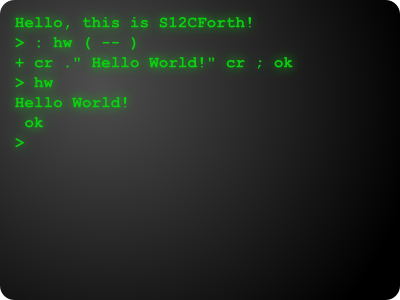

</img>
<p><strong>S12CForth</strong> is a Forth implementation for <a href="http://www.nxp.com">NXP's</a> S12 Microcontrollers. It has been written for the MC9S12C family, but it can be easily ported to other S12(X) products. This project attempts to implement the ANS Forth Standard.</p>

{% include LatestPosts.html %}
